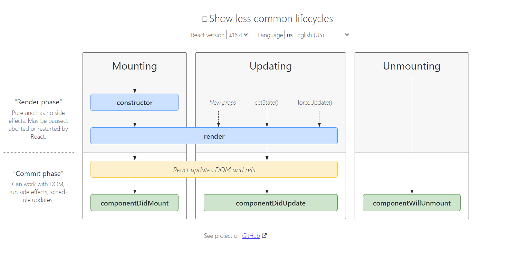
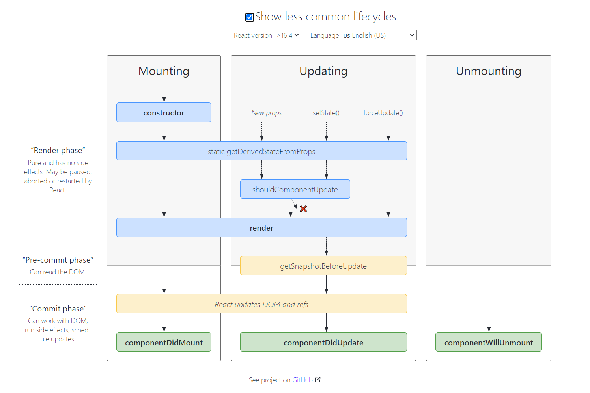

React脚手架
React 脚手架
- React 官方脚手架
npx create-react-app my-app
- 使用新的打包工具 vite 搭建开发环境
npm init vite@latest --> 选择 react
- 组件
- 函数式组件
import React from 'react';
export default function Cpn() {
return <div>Cpn</div>;
}
- 类式组件
import React, { Component } from 'react';
export default class Cpn extends Component {
render() {
return <div>Cpn</div>;
}
}
- react 生命周期
- 常用的生命周期
render();
constructor(props);
componentDidMount();
componentDidUpdate(prevProps, prevState, snapshot);
componentWillUnmount();
- 不常用的生命周期(一般不会用)
shouldComponentUpdate(nextProps, nextState)
static getDerivedStateFromProps(props, state)
getSnapshotBeforeUpdate(prevProps, prevState)
- 生命周期图
 
- react 生命周期文档 : https://react.docschina.org/docs/react-component.html
----本文结束----
 React组件通信一
React组件通信一